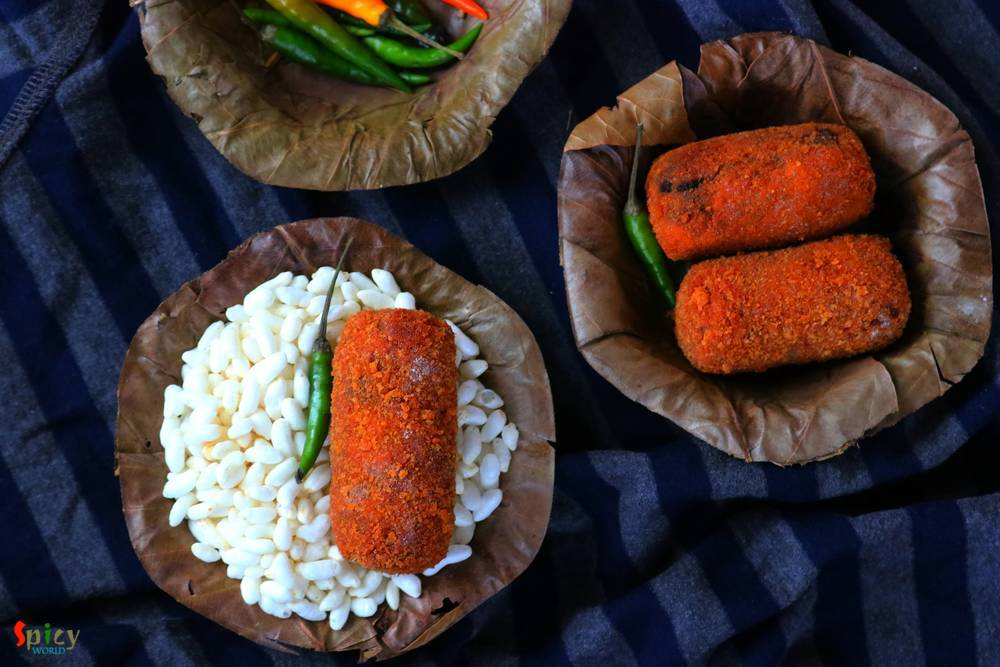

Simple and Easy Recipes
Vegetable Chop / Vegetable Cutlets / Beetroot Cutlets
By Arpita © 2016 Spicy World
Aug 27, 2018
Aug 27, 2018

A cup of tea and some vegetable cutlets .... do you need anything more to spend a winter or rainy evening ?? I am always up for this kind of evenings. These cutlets are very much available in Kolkata. I guess, almost nobody makes vegetable cutlets at home in Bengal. On any occasion or just to enjoy some snacks, these chops were always bought from 'telebhajar dokan' / fast food center in my home. But in US, almost every Bengali knows how to make them. You can also make them in large quantity and then freeze them to enjoy afterwards. The recipe has no onion and no garlic, still yummy ...!

Ingredients
- 2 medium beetroots, peeled then grated.
- 2 medium carrots, peeled then grated.
- 1 medium potato, boiled and mashed.
- 1 Teaspoon of ginger paste.
- 2-3 green chilies, chopped.
- 2 Tablespoons of crushed peanuts.
- 7-8 raisins.
- A big pinch of panchforon / Bengali five spices.
- 3 Tablespoons of coriander seeds.
- 2 Tablespoons of cumin seeds.
- 1 dry red chili.
- Salt and sugar.
- 3 Tablespoons of all purpose flour / moida.
- 1 cup of breadcrumbs.
- Lots of vegetable oil.
- 1/4th cup of water.
{kind=link}
{kind=link}
Steps

Dry roast the cumin seeds, coriander seeds and dry red chili in a pan for 3-4 minutes on low flame. Then grind them to a fine powder (Bhaja Moshla). Keep it aside.
Heat 1-2 Tablespoons of oil in a pan.
Saute the panchforon for few seconds.
Then add ginger paste and chopped green chilies. Fry for few seconds.
Then add grated (you can also chop them finely) beetroots and carrots. Do not boil them otherwise the veggies will lose their juices and the filling won't come out tasty. Cook for 5 minutes.
Add salt and cook for another 4-5 minutes.
Then add boiled and mashed potato. Mix well for 3 minutes.
Add crushed peanuts and raisins. Mix well.
Add 2 Tablespoons of that prepared dry roasted powder (bhaja moshla). Mix well.
Lastly add 1 Teaspoon of sugar and some more salt. Mix well and turn off the heat.
Let the mixture cool down completely.
After that take some portion from the mixture within your palm and give a oblong or patty like shape by constantly rolling it.
Mix the flour and little water in a bowl. The flour mixture will be runny.
Now dip one croquette into the flour mixture (you can also use beaten egg instead of this) and then roll it in breadcrumbs.
Repeat the process to crumb the croquettes well.
Keep them in fridge for 15-30 minutes.
Then drop them gently in hot oil and fry for 3-4 minutes or until they become golden in color.
After that take them out in a tissue paper and sprinkle black salt or chaat masala all over them
Additional Info
Recipe Category: Appetizers: Vegetarian
Recipe Cuisine: Indian
Preparation Time: 45 minutes
Cooking Time: 45 minutes
Serves: 3
Your vegetable cutlets are ready ...
- Enjoy them hot with a cup of tea ...
{kind=link}
All Images and Recipes are copyrighted to Spicy World.
For more recipes visit us at http://spicyworld.in
Leave Your Comments